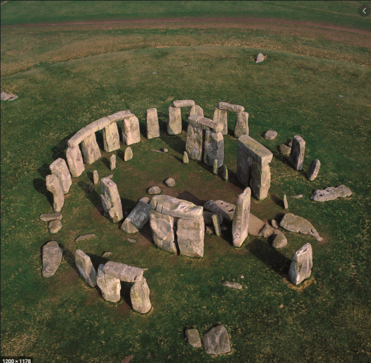
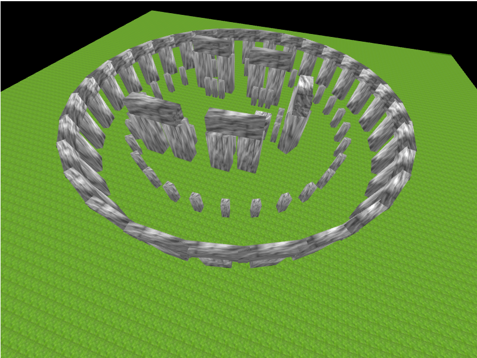

Stone Henge
개인으로 진행한 텀프로젝트
WebGL을 사용하여 개발함
- 프로젝트 설명
플레이어가 고민 중일 때 이 게임을 켜서 제단과 상호작용을하면
신성한 게임이펙트 효과와 텍스트로 랜덤한 대답이 나오는 미니 게임
스톤헨지를 만드는 것에 시간이 너무 소비되어 후자의 기능들은 구현하지 못함
- 조작키 및 구현내용 설명
| 조작키 | 구현내용 |
| 화살표(마우스로 클릭) | 카메라 이동 |
| 화면을 마우스로 드래그 | 시점 변경 |
- 담당한 부분
- 프로젝트 결과


- 프로젝트를 진행하면서 느낀 점
- 어려웠던 점
- 어렴풋이 생각만 했던 개발 방식 ← 스톤헨지에서 거대한 돌 하나를 만드는 것 조차, 3차원의 벡터를 설정하면서 위치를 지정했는데, 이 과정들이 너무 생소해서 적응하는데 시간이 많이 걸림
- 3차원 공간 계산 ← 유니티의 경우 게임 씬에 Cube를 놓고 드래그로 위치 조정을 했던 것들이, WebGL에서는 원하는 위치를 알맞게 계산해서 코드로 위치를 지정해야했음. 이 과정에 시간이 너무 소모되어 나머지 기능들을 구현할 시간이 너무 부족했음
- 깨달은 점
- 간단히 사용만 하던 게임 개발 툴 뒤엔 어떻게 작동하는지에 대한 원리를 알음
- 해당 강의를 수강하면서 "게임 클라이언트 엔진 개발자"라는 직군에 대해 알게됨